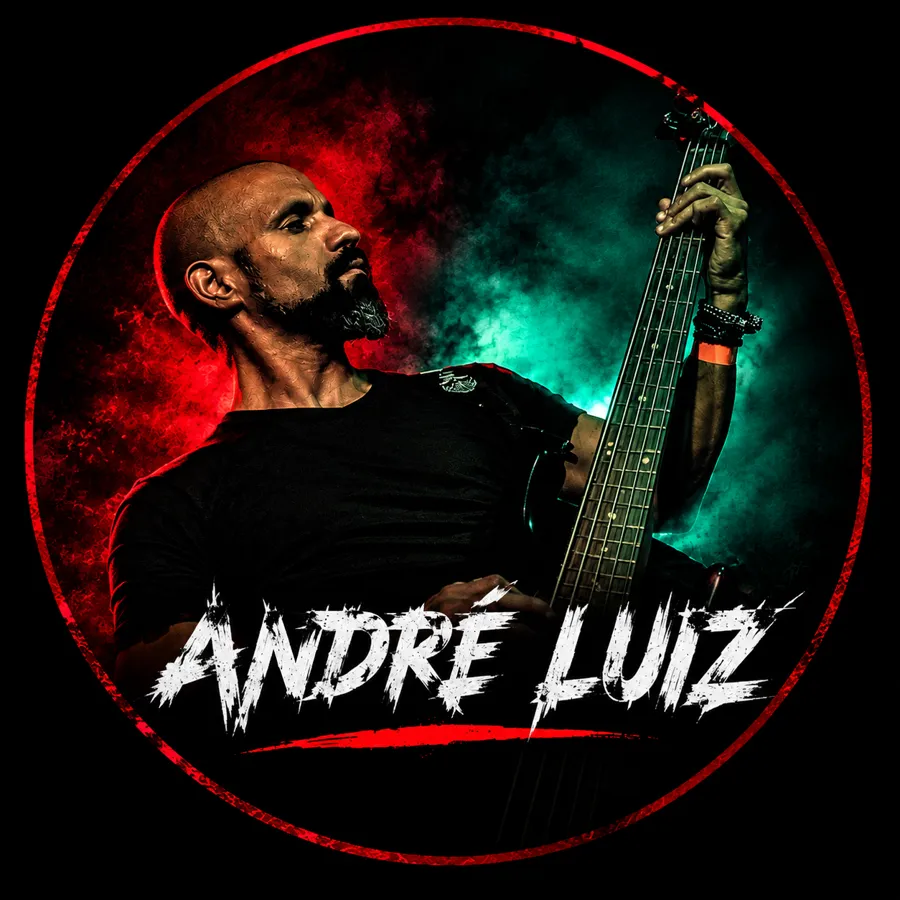

AndréLuiz
BAIXISTA
Baixista freelancer de metal desde 2007. Do metal sinfônico ao thrash, levo para o palco, o estúdio e o videoclipe um grave firme que serve à música.

Quase duas décadas de grave pesado
Em fevereiro de 2007 entrei na primeira formação da Opus Eclipse e fiquei até 2012. Foram cinco anos com um repertório que não perdoa: arranjos longos, orquestrações e coros líricos que exigem um baixo preciso e sem sobra. Depois vieram três anos com a Noctra, tributo a Epica e After Forever.
No autoral, encontrei o peso do thrash com a Sophie's Threat e o heavy metal clássico com a High Moonlight, veterana da cena paulistana, com quem gravei o álbum “Lycans” (2025) e o videoclipe de “Heavy Play”. Hoje toco como freelancer e desenvolvo o RootingDoom, meu projeto autoral.
Carreira
Do tributo sinfônico ao heavy metal autoral, em ordem.
Thrash, heavy e black metal. A música é o meu combustível.
Discografia
Gravações em que assino o baixo.
Como posso somar à sua banda
Trabalho como freelancer em São Paulo e região. Mande a data e o repertório que eu digo se consigo.
Vídeos
Galeria
Depoimentos
O que dizem os músicos com quem gravo e toco.
Vamos tocar?
Show, substituição, gravação ou clipe. Me conte a data e o repertório.
Contato
O caminho mais rápido é o WhatsApp. Se preferir, deixe sua mensagem no formulário.